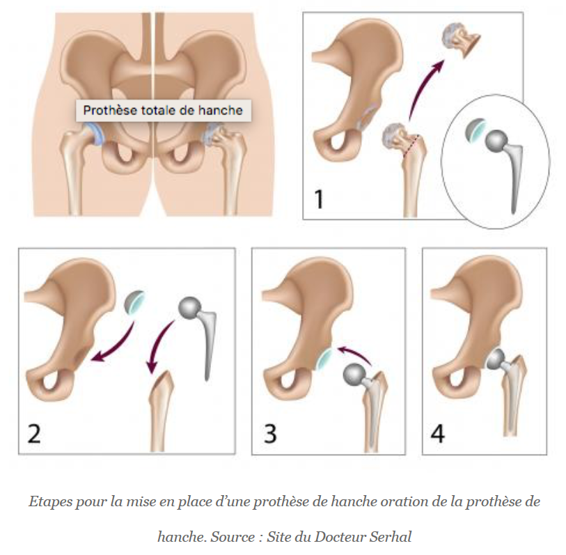
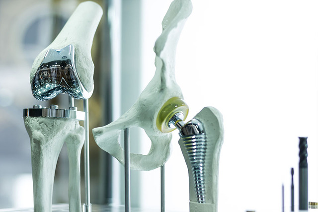

La Prothèse Totale De La Hanche
Dégradation de l'Articulation de la Hanche:
L’arthrose et la nécrose de hanche sont les deux causes principales de dégradation douloureuse de l’articulation de la hanche.
Dans les deux cas, la surface de frottement entre l’os de la cuisse et l’os du bassin présente une usure. Ceci provoque une douleur et/ou une raideur invalidante.
Il n’existe actuellement aucun moyen efficace de réparer cette surface de frottement constituée de cartilage.
Mi se en place d'une prothèse totale de hanche (PTH)
Critères pour la décision chirurgicale
- Douleur ou gêne importante : Le patient doit ressentir une douleur significative ou une gêne qui affecte sa qualité de vie.
- Durée et résistance aux traitements : Cette douleur ou gêne doit être prolongée et ne pas répondre aux traitements médicaux habituels (comme les médicaments ou la physiothérapie).
- Confirmation radiographique : Une radiographie de la hanche doit montrer une usure avancée de l'articulation, justifiant ainsi la nécessité d'une prothèse.
Bilan pré-opératoire complet
- Consultation avec un anesthésiste : Pour évaluer les risques liés à l'anesthésie et préparer le patient pour l'opération.
- Consultation avec un cardiologue : Pour vérifier la santé cardiaque du patient et s'assurer qu'il peut supporter l'intervention chirurgicale.
- Prise de sang : Pour vérifier divers paramètres de santé, comme la coagulation sanguine, les niveaux d'hémoglobine, etc.
- Radiographie spécifique : Pour mesurer précisément les dimensions de la prothèse qui sera utilisée, afin qu'elle s'adapte parfaitement à l'anatomie du patient.
Pendant l'opération
Incision cutanée : L'incision est réalisée sur le bord de la hanche pour accéder à l'articulation.
Durée de l'intervention : L'opération dure environ 1 heure et 30 minutes, incluant la préparation et la sortie de la salle d'opération.
Récupération du sang : Un système permet de récupérer le sang perdu durant l'opération et de le réinjecter au patient.
Composition de la prothèse totale de hanche (PTH) : La PTH est composée de 3 ou 4 parties. Certaines parties sont fixées à l'os du fémur et du bassin, tandis que d'autres sont assemblées entre elles. Les matériaux utilisés incluent le métal (alliages de chrome-cobalt, titane ou oxinium), le polyéthylène (plastique industriel spécial) et la céramique.
Choix de la prothèse : Il existe de nombreux types de prothèses, et le chirurgien choisit celle qui convient le mieux à chaque patient.
Après l'opération
Mobilisation précoce : Dès le deuxième jour, le patient peut s'asseoir sur une chaise.
Retrait des drains de redon : Les drains, qui aspirent le sang pour éviter les hématomes, sont retirés le troisième jour.
Début de la marche : La marche avec des béquilles commence rapidement pour prévenir les phlébites (caillots de sang dans les veines des jambes).
Durée du séjour à la clinique : Le séjour dure en moyenne une semaine, mais cette durée tend à diminuer avec les progrès médicaux.
Rééducation : La rééducation commence à l'hôpital et se poursuit à domicile ou dans un centre avec un kinésithérapeute pendant environ 2 à 4 semaines.
Précautions post-opératoires : Certaines règles de vie et de positionnement de la jambe doivent être respectées pour éviter une luxation de la prothèse (déboîtement). La luxation est plus rare après la cicatrisation complète des tissus autour de la prothèse, ce qui prend environ 2 à 3 mois. L'utilisation de la voiture est déconseillée pendant les premières semaines après l'opération.
Les progrès récents dans les prothèses de hanche
Nouveaux matériaux :
- Métasul® et Céramique : Ces matériaux sont développés pour réduire l'usure progressive de la prothèse, augmentant ainsi sa durabilité.
- Titane et Hydroxyapatite : Utilisés pour améliorer la fixation de la prothèse à l'os, ces matériaux assurent une meilleure intégration et stabilité.
- Cupule double mobilité : Conçue pour éviter la luxation de la prothèse, cette innovation permet une plus grande liberté de mouvement et réduit le risque de déboîtement.
Durée de vie prolongée : Grâce à ces innovations, la durée de vie des prothèses peut désormais dépasser les 15 ans, ce qui est la longévité espérée avec les modèles actuels.
Options de pose avec ou sans ciment :
- Avec ciment : Cette méthode permet une fixation immédiate de la prothèse, mais peut présenter des risques de descellement à long terme.
- Sans ciment : Cette technique favorise la croissance osseuse autour de la prothèse pour une fixation naturelle, mais nécessite une période de récupération plus longue initialement.
Techniques de pose modernes :
- Assistance informatique : Utilisée pour une précision accrue lors de la pose de la prothèse.
- Voie mini-invasive : Cette méthode limite l'incision, évite de sectionner les muscles, réduit le saignement et permet une récupération plus rapide de la fonction et de la marche.
Vidéo : La Prothèse Totale De La Hanche
(attention certaines images sont à éviter pour les personnes sensibles)